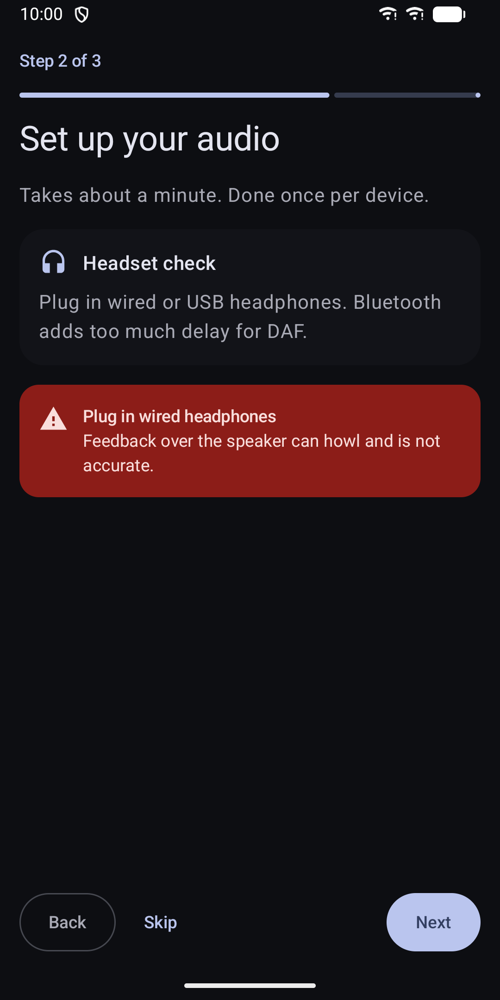
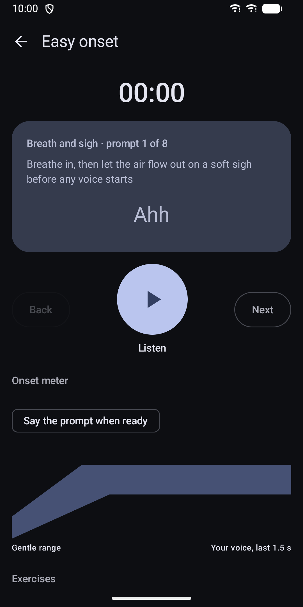

Tartamudez: práctica con DAF
DAF, habla con ritmo e inicio suave para practicar la fluidez.





Acerca de la app
Practica el habla fluida por tu cuenta, en cualquier lugar, sin cuenta y sin conexión a internet. Stutter Practice es un conjunto de herramientas para adultos que tartamudean. Reúne ejercicios que usan muchos logopedas en una app tranquila y privada. RETROALIMENTACIÓN AUDITIVA RETARDADA (DAF) Escucha tu propia voz un instante después con auriculares con cable o USB. Ajusta el retardo de 25 a 250 ms con un control deslizante, botones de más y menos o valores rápidos. Una breve calibración lee el retardo de audio de tu móvil y puedes afinarla de oído, para que el retardo que eliges sea muy parecido al que oyes. La app te avisa cuando el Bluetooth o el altavoz están activos, porque añaden retardo. HABLA CON RITMO Un metrónomo visual marca un ritmo de 40 a 200 sílabas por minuto. Las frases de práctica se iluminan sílaba a sílaba con cada pulso y la siguiente frase aparece debajo. Activa la vibración para sentir el pulso sin mirar. INICIO SUAVE Empieza las palabras con suavidad. Un medidor en directo muestra cómo sube tu voz y te dice si el inicio fue suave o demasiado brusco. 12 ejercicios van desde la respiración y los suspiros hasta frases completas. LECTURA EN VOZ ALTA 30 textos en inglés en tres niveles: conversaciones cotidianas, llamadas, trabajo e historias. Cada palabra se resalta a tu ritmo. Puedes combinar la lectura con DAF. REGISTRO DE PRÁCTICA Y WIDGET Cada sesión se guarda en tu móvil con sus ajustes. Consulta tu racha, los minutos de hoy y un gráfico semanal. Añade el widget a la pantalla de inicio para tener tu racha siempre a la vista. PRIVACIDAD DESDE EL DISEÑO • Sin permiso de internet. No se envía nada a ningún sitio. • Tu voz se procesa en directo y nunca se graba ni se guarda. • Sin cuenta, sin anuncios, sin analíticas. • Tu registro de práctica se queda en tu móvil, salvo que actives la copia de seguridad de Google. GRATIS, CON DESBLOQUEO ÚNICO Gratis: DAF, habla con ritmo, 3 ejercicios de inicio suave, 3 textos, el registro completo y el widget. Un único pago desbloquea los 12 ejercicios, los 30 textos y DAF durante la lectura. Sin suscripción. ACCESIBLE El tema claro u oscuro sigue al del sistema. Funciona en móviles y tablets. Botones grandes y etiquetas para lectores de pantalla. Para DAF necesitas auriculares con cable o USB. La app y los textos están en inglés. Stutter Practice no es un producto sanitario y no sustituye a la terapia. Funciona bien como complemento a la orientación de un logopeda.